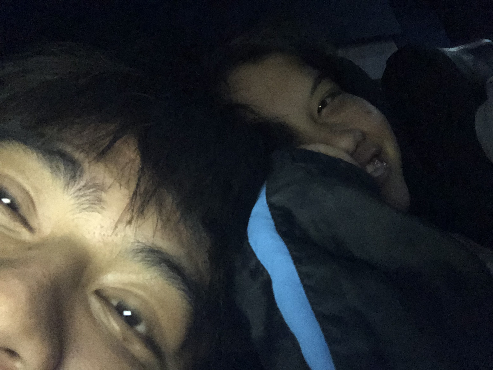
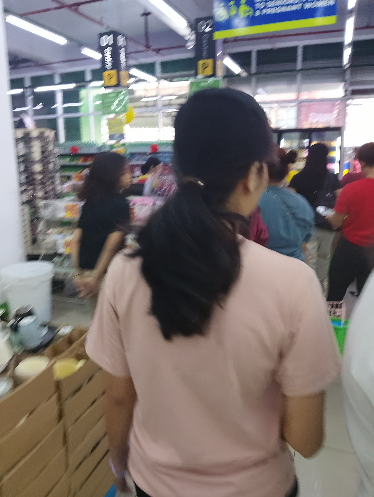

This was our first time trying a photo booth, and honestly, we had no idea what we were doing. We didn’t know how to pose, what expressions to make, or even which design to choose, but somehow, that made the whole experience even more special and fun. We were just figuring things out together, laughing, being silly, and enjoying every moment, and I love how we couldn’t take the smiles off our faces while the pictures were being taken and even after. We even looked at the photos right away, checking how we looked and laughing at our cute little poses. Looking back at those pictures makes my heart so full because they captured how genuinely happy we were in that moment. We didn’t need perfect poses or a perfect setup we just had each other, and that was more than enough.

This was our first time watching a movie together in the cinema, and it was extra special for me because it was my first time watching a Marvel movie with the person I love, especially since we watched the superhero who has been my childhood favorite. I was honestly a little nervous at first, love, because I kept wondering if you would enjoy the movie, especially since it was also your first time watching a Marvel movie. I was hoping you would like it because it meant so much to me, and I wanted to share something I’ve loved since I was a kid with someone who means so much to me now. Seeing you enjoy the movie, watching your reactions, and knowing that you were having a good time made me so happy. Thank you, love, for giving it a chance and for enjoying the movie with me. It may have just been our first movie date, but for me, it became a beautiful memory that I’ll always treasure because I got to experience one of my childhood favorites with my favorite person.

I’m including this picture because this was the day I accompanied you to get your tads, and I chose it because this was also the morning when we had a little fight. Even when we’re misunderstand each other, love, somehow we always find our way back to one another. We may argue, misunderstand each other, and have moments when our emotions get the best of us, but at the end of the day, we choose to forgive, understand, and make things right again. Love, no matter how difficult things may become, let’s keep choosing each other every single day. Let’s continue loving each other through the good days and the bad ones, through our arguments and our apologies, through the moments when we agree and even when we don’t. I know we’re not perfect, and our relationship will never be perfect, but what matters to me is that we never stop trying, never stop communicating, and never stop finding our way back to each other. I want us to grow together, learn from every misunderstanding, and become better for one another. So whenever we fight, let’s remember why we started, why we fell in love, and why we continue to choose each other.